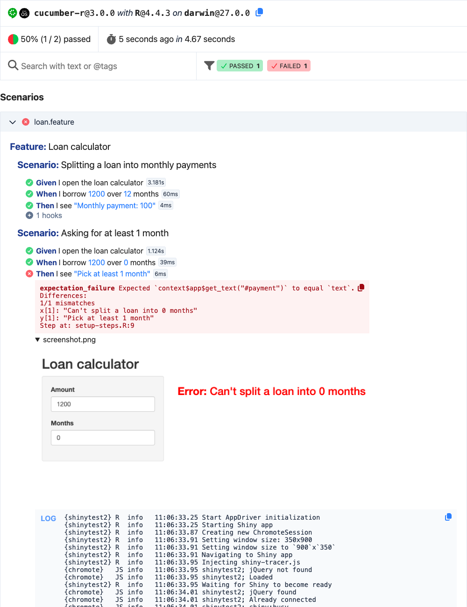

A run of cucumber::test() prints its progress to the console. To keep its results, write its report: a page with every feature, scenario and step, and what the steps attached, like screenshots and logs.
The HTML report
CucumberHtmlReporter writes the official Cucumber HTML report when the run ends, even when it fails: one file that works offline, where features can be searched and filtered by status, text and tags. Combine it with a reporter that prints, to see the progress of the run too:
cucumber::test(
reporter = cucumber::CucumberMultiReporter$new(list(
cucumber::CucumberProgressReporter$new(),
cucumber::CucumberHtmlReporter$new("cucumber-report.html")
))
)CucumberJunitReporter writes the JUnit XML report the same way, for CI services to show the results of the run.
Report a run after it ran
A reporter gets the run as Cucumber Messages. CucumberMessagesReporter stores them, one line of JSON each, and the report() method of any reporter reports the run from them later:
cucumber::test(reporter = cucumber::CucumberMessagesReporter$new("cucumber.ndjson"))
cucumber::CucumberHtmlReporter$new("cucumber-report.html")$report("cucumber.ndjson")
cucumber::CucumberJunitReporter$new("cucumber-junit.xml")$report("cucumber.ndjson")Attach screenshots and logs
A step or a hook attaches data to the report with its context:
-
context$attach(data, media_type, file_name)attaches a string or a raw vector, like an image read withreadBin(). -
context$log(text)attaches text to read. -
context$link(...)attaches links: each argument is a URL or a character vector of URLs, likecontext$link("https://example.com/basket", "https://example.com/checkout").
The report shows each attachment under the step it’s attached to. See ?attachments.
Screenshots and logs of a failing shinytest2 scenario
When a scenario of a Shiny app fails, seeing the app is often the fastest way to know why. This example attaches a screenshot of the app and its logs to the step that failed. Its files are in inst/examples/shinytest2_report.
The app splits a loan into monthly payments. It has a bug: for 0 months it fails instead of asking for at least 1 month.
library(shiny)
ui <- fluidPage(
titlePanel("Loan calculator"),
sidebarLayout(
sidebarPanel(
numericInput("amount", "Amount", value = 1000, min = 0),
numericInput("months", "Months", value = 10, min = 0)
),
mainPanel(
h3(textOutput("payment"))
)
)
)
server <- function(input, output) {
output$payment <- renderText({
message("Calculating the payment of ", input$amount, " over ", input$months, " months")
# A bug: 0 months should ask for at least 1 month instead of failing
if (input$months == 0) stop("Can't split a loan into 0 months")
paste("Monthly payment:", input$amount / input$months)
})
}
shinyApp(ui, server)The specification describes what the app should do:
Feature: Loan calculator
Scenario: Splitting a loan into monthly payments
Given I open the loan calculator
When I borrow 1200 over 12 months
Then I see "Monthly payment: 100"
Scenario: Asking for at least 1 month
Given I open the loan calculator
When I borrow 1200 over 0 months
Then I see "Pick at least 1 month"The steps drive the app with shinytest2::AppDriver, kept in the context:
given("I open the loan calculator", function(context) {
context$app <- shinytest2::AppDriver$new(testthat::test_path("../../"), name = "loan", width = 900, height = 350)
})
when("I borrow {int} over {int} months", function(amount, months, context) {
context$app$set_inputs(amount = amount, months = months)
})
then("I see {string}", function(text, context) {
expect_equal(context$app$get_text("#payment"), text)
})An after_step() hook attaches the screenshot and the logs when a step fails, and an after() hook stops the app:
# When a step fails, attach a screenshot of the app and its logs to the step
after_step(function(context, step) {
if (step$status == "failed" && !is.null(context$app)) {
file <- tempfile(fileext = ".png")
context$app$get_screenshot(file)
context$attach(readBin(file, "raw", file.size(file)), "image/png", file_name = "screenshot.png")
context$log(paste(format(context$app$get_logs()), collapse = "\n"))
}
})
# Stop the app after each scenario
after(function(context, scenario) {
if (!is.null(context$app)) context$app$stop()
})The hook attaches them in after_step(), so they’re attached to the step that failed and shown under it. Attachments of an after() hook are shown under the hook, which the report folds away when the hook passes.
Run the scenarios, showing their progress and writing the report:
# Run the scenarios, showing their progress and writing the HTML report.
cucumber::test(
"tests/acceptance",
reporter = cucumber::CucumberMultiReporter$new(list(
cucumber::CucumberProgressReporter$new(),
cucumber::CucumberHtmlReporter$new("cucumber-report.html")
)),
stop_on_failure = FALSE
)shinytest2 skips its apps on CRAN, and it takes any run for a CRAN run unless the NOT_CRAN environment variable is "true". devtools::test() sets it, and cucumber::test() sets it too when it isn’t set, outside of a testthat run and R CMD check.
The report shows the failed step with its error, the screenshot of the app with the error it shows, and the app’s logs, with the R error and where it was raised:

Open the report to see it as it’s written.
Keep the report of a CI run
In CI, keep the report as an artifact of the job, even when the run fails. With GitHub Actions:
- name: Run the scenarios
run: |
cucumber::test(
reporter = cucumber::CucumberMultiReporter$new(list(
cucumber::CucumberProgressReporter$new(),
cucumber::CucumberHtmlReporter$new("cucumber-report.html"),
cucumber::CucumberJunitReporter$new("cucumber-junit.xml")
))
)
shell: Rscript {0}
- uses: actions/upload-artifact@v4
if: always()
with:
name: cucumber-report
path: |
cucumber-report.html
cucumber-junit.xmlReports of your own
read_messages() reads the messages as tibbles of the run’s features, scenarios and steps, with their status, duration and error. Use it to write a report of your own, like a summary of the failed steps for a CI job.